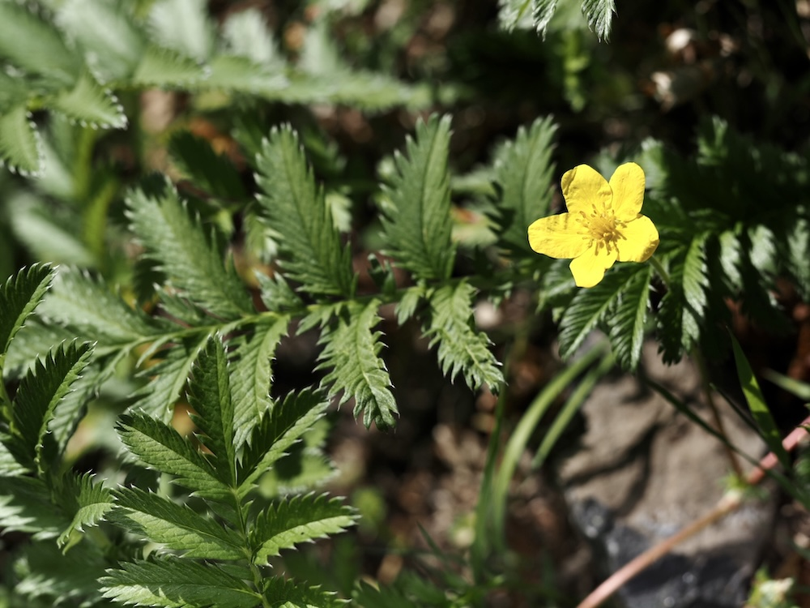

Silbergrünes Polster mit gelben Sternen — und tatsächlich Gänsefutter.


Was Gänse mit dieser Pflanze zu tun haben
Der Name ist wörtlich gemeint: Hausgänse fressen das Kraut so gerne, dass es früher rund um Bauernhöfe und Dorfweiher überall wuchs. Genau dort hat es perfekte Bedingungen — feucht, oft niedergetrampelt, gut gedüngt. Wer einen alten Bauernhof mit Gänsen kennt, kennt auch das Gänsefingerkraut.
Silberblatt von unten
Wenn du ein Blatt umdrehst, erlebst du eine kleine Überraschung: Die Unterseite ist dicht silbrig-weiß behaart. Diese Behaarung reflektiert Licht und reduziert Verdunstung — eine Anpassung an die oft sonnigen Standorte zwischen den feuchten Phasen. Streich einmal mit dem Finger über die Unterseite, das fühlt sich richtig samtig an.
Wissenswertes & Merksätze
Erkennen leicht gemacht
Lange Ausläufer am Boden, ähnlich wie Erdbeeren. Blätter unpaarig gefiedert, oben grün, unten silberweiß behaart. Blüten einzeln, groß für die Pflanze (1,5–2 cm), leuchtend gelb mit fünf Blütenblättern.
Heilpflanze mit Sammlerwert
Die Wurzeln wurden im Mittelalter gegen Krämpfe und Bauchschmerzen verwendet. Heute weiß man, dass sie tatsächlich Gerbstoffe enthalten, die beruhigend auf den Verdauungstrakt wirken. Im Notfall war ein Tee aus den Wurzeln eine der wenigen verfügbaren Hausmedikamente.